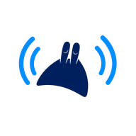
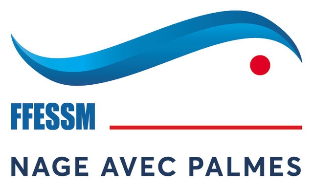

LivePalmesCommission Nationale Nage avec Palmes Accueil LivePalmes
Saison sportive
Calendrier fédéral
Compétitions, formations, stages et rendez-vous fédéraux, partout en France.

Chargement…

LivePalmesCommission Nationale Nage avec Palmes Accueil LivePalmesCompétitions, formations, stages et rendez-vous fédéraux, partout en France.
